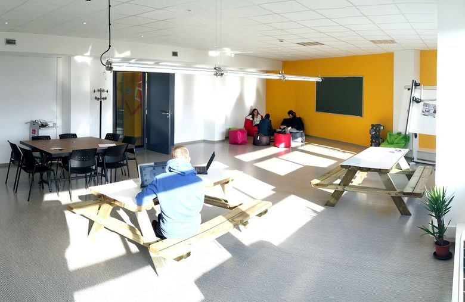

Apprendre à coder ? oui mais comment ?
Lisez la suite…
Un atelier pour découvrir la programmation web
Django est un framework web moderne et performant utilisé partout dans le monde.
Apprendre à programmer peut sembler être une tâche insurmontable. Il n'en est rien, venez découvrir le code informatique dans un cadre convivial et bienveillant avec des mentors expérimentés.
L'atelier est gratuit, mais les inscriptions sont obligatoires et les places très limitées
Cet atelier-tutoriel s'inscrit dans le cadre des rencontres django 2017. L'inscription aux rencontres n'est pas nécessaire pour participer à l'atelier.
Les rencontres django se veulent accessibles et accueillantes pour tout le monde. Veuillez consulter notre code de conduite sur sa page dédiée.
Le 31 mars, de 09H00 à 17H00, maison des technologies, Toulon.
Non. C'est un atelier pour débutant(es). Si vous avez déjà programmé, votre mentor s'adaptera.
Nous sommes accueillis et sponsorisés par Toulon Var Technologies, à côté du centre Mayol.
Vous aurez besoin d'un ordinateur portable. Nous installerons ce qu'il faut pour suivre le tutoriel.
Si vous n'en avez pas, contactez nous pour que nous essayons de résoudre le problème.
En dehors du café et de quelques croissants, aucune restauration n'est prévue. La proximité immédiate du centre commercial vous permettra de déjeuner.
Vous pouvez également apporter un repas froid.
Chaque mentor prendra en charge 2 à 3 participant(e)s. Vous serez accompagné tout au long de l'atelier, afin que les éventuelles difficultés soient aplanies.
Le tutoriel se déroulera dans une atmosphère détendue, bienveillante et studieuse.
Chaque participant(e) avance à son propre rythme et apprendra beaucoup au cours de cette journée.

Mais c'est une super idée !!! Je m'inscris
Votre inscription sera définitivement validée en fonction des places disponibles.